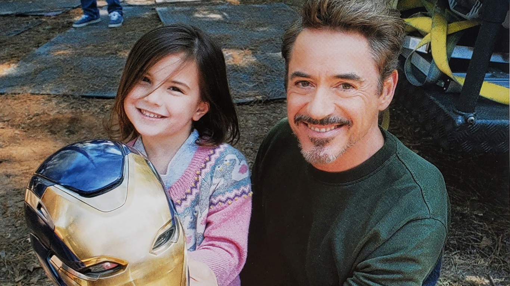
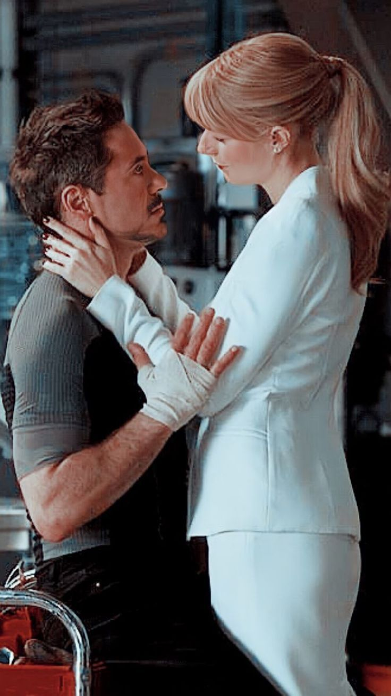
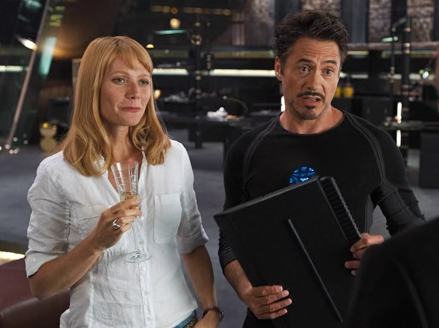
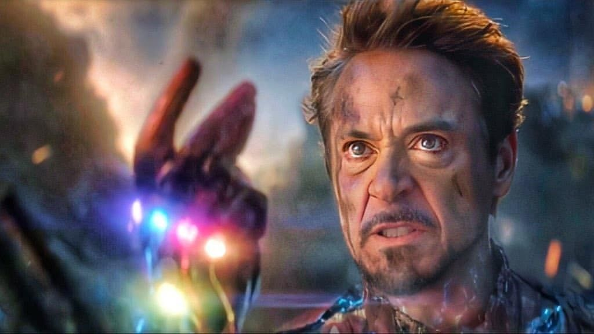
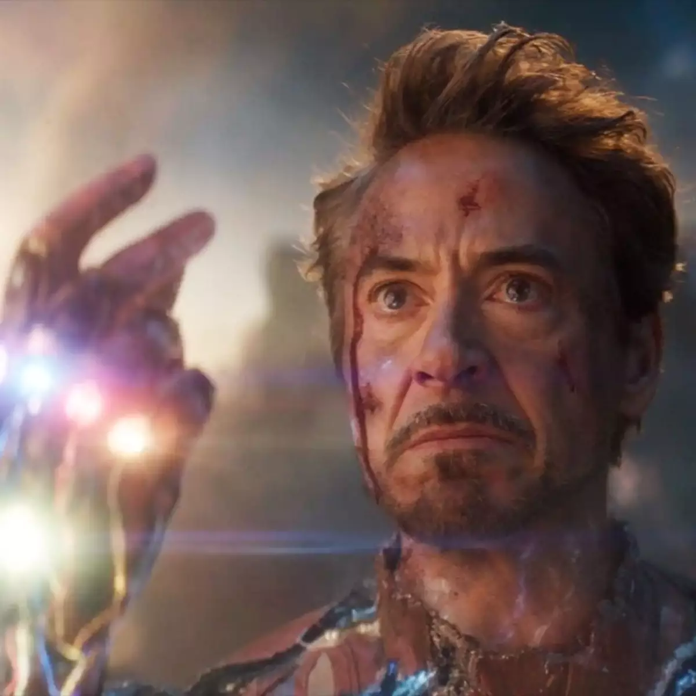

"A EVOLUÇÃO DE UM PERSONAGEM."


A Evolução de Stark como pessoa.
No início de sua trajetória, Tony Stark era um homem extremamente inteligente, rico e arrogante. Acostumado a conseguir tudo o que desejava, demonstrava pouco interesse pelos problemas do mundo e colocava seus próprios interesses acima de qualquer outra coisa.
Após ser capturado no Afeganistão e perceber as consequências de suas próprias armas, Tony começou a enxergar o mundo de uma maneira diferente. A experiência mudou sua forma de pensar e despertou nele um sentimento de responsabilidade pelas consequências de suas criações.
Com o passar do tempo, Tony deixou de ser apenas um inventor brilhante e passou a assumir o papel de herói. Mesmo mantendo seu humor sarcástico e sua personalidade forte, começou a demonstrar preocupação genuína com as pessoas, colocando frequentemente sua própria vida em risco para protegê-las.
Sua relação com os Vingadores também contribuiu para essa transformação. Ao construir amizades e enfrentar grandes ameaças ao lado de seus companheiros, Tony aprendeu sobre confiança, trabalho em equipe e sacrifício, percebendo que não precisava enfrentar todos os desafios sozinho.
Outro momento importante de sua evolução foi a construção de uma família ao lado de Pepper Potts e o nascimento de sua filha, Morgan. Pela primeira vez, Tony encontrou algo que desejava proteger acima de suas próprias conquistas, descobrindo uma felicidade que ia muito além da tecnologia e do reconhecimento.
No confronto final contra Thanos, Tony tomou a decisão que definiu sua história: sacrificou a própria vida para salvar o universo. Aquele homem que começou sua jornada pensando principalmente em si mesmo terminou como alguém disposto a perder tudo por aqueles que amava, deixando um legado de coragem, amor e heroísmo.
Um homem que só pensava em si mesmo
No início de sua trajetória, Tony Stark era um homem arrogante e egoísta, que vivia cercado de riqueza, fama e luxo. Sua maior preocupação era satisfazer os próprios desejos, sem se importar com as consequências de suas atitudes ou com as pessoas ao seu redor. Para ele, sua genialidade e seu sucesso estavam acima de tudo e de todos.

O início de uma família
Com o passar do tempo, Tony Stark começou a enxergar a vida de outra maneira, especialmente após conhecer Pepper Potts, que se tornou muito mais do que uma companheira. Ao lado dela, construiu uma família e descobriu um sentimento que antes parecia distante: o amor e a vontade de proteger aqueles que eram importantes para ele.

O ato final de um herói
No ato final, Tony Stark demonstrou sua maior transformação, deixando de lado tudo o que tinha para salvar o universo. Ao realizar o estalo com as Joias do Infinito, sacrificou sua própria vida para proteger sua família, seus amigos e toda a humanidade, tornando-se um verdadeiro herói.
Por trás da armadura
Conheça a origem de Tony Stark, sua personalidade arrogante e egoísta, sua genialidade e como tudo começou.
Amor e família
Descubra como Pepper Potts e a construção de uma família mudaram suas prioridades e sua maneira de enxergar a vida.
De herói a mentor
Tony Stark tornou-se mentor de Peter Parker, ensinando-lhe sobre responsabilidade e o verdadeiro significado de ser um herói.

O legado de um herói
Relembre o maior sacrifício de Stark, o ato de um herói e como suas escolhas mudaram o destino do universo.